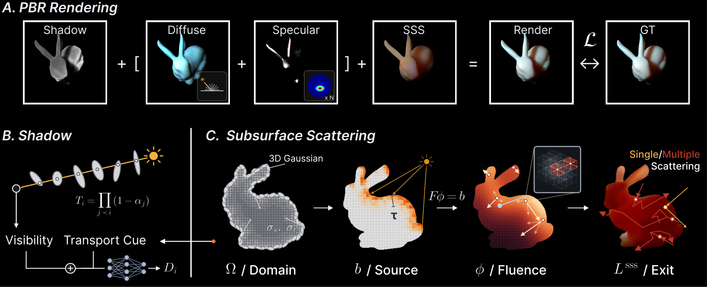
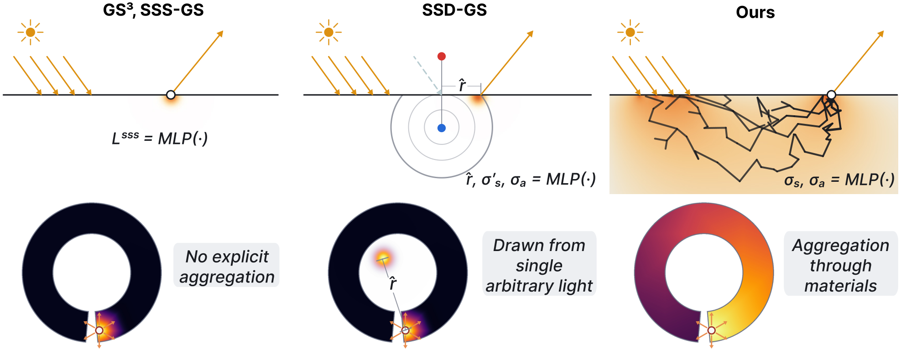
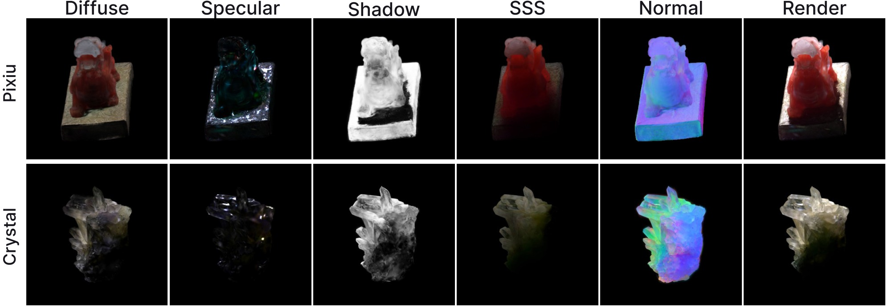
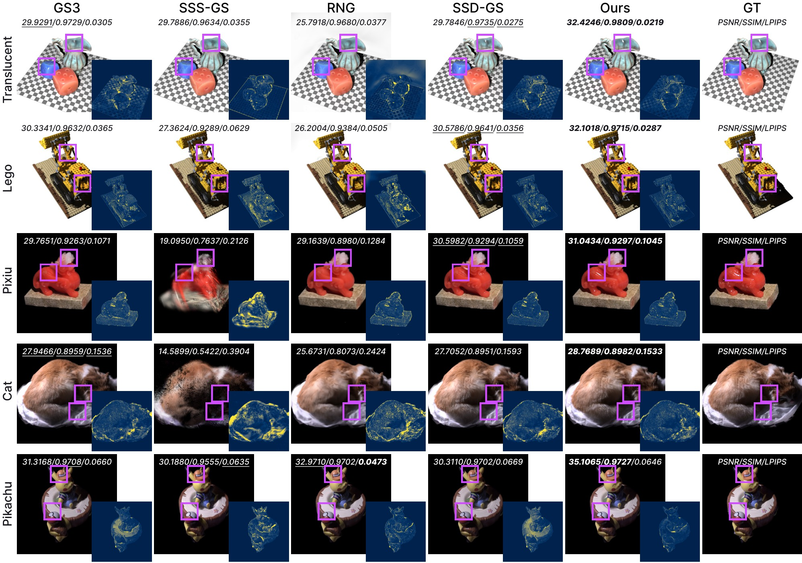
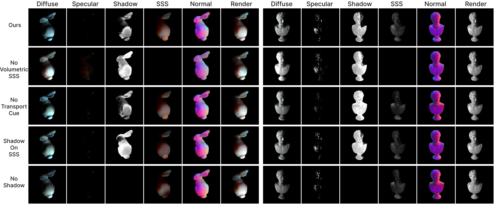

We present VolS-GS, a relightable Gaussian splatting framework that reconstructs objects from one-light-at-a-time (OLAT) captures and renders them under novel lighting and viewpoints. Relightable Gaussian Splatting methods typically model appearance independently at each primitive, which makes non-local effects difficult to represent. This limitation is particularly apparent for subsurface scattering, where light entering the object at one location can emerge at another.
Rather than modeling this effect solely with a neural network or a local kernel at each primitive, we use the spatial support of the Gaussian scene as the domain of a differentiable finite-volume transport solver, so that light can propagate through the object's interior. A small network predicts scattering and absorption coefficients for each Gaussian, and the solve redistributes incident light through the resulting field.
To keep the learned shadow and specular terms from taking over the other components, our shadow term is predicted from visibility together with the transmittances and the scattering the solve produces, and a regularizer suppresses specular highlights in regions the shadow term predicts to be unlit.
A small network reads each Gaussian and predicts how strongly its material scatters and absorbs light. Those coefficients turn the region the Gaussians occupy into a volume that light can be solved through, so a ray entering the object at one point can leave at another. One forward and one adjoint solve per step make the whole thing trainable, and the volume itself carries no learnable parameters.

Gaussians sit on the surface, so a kernel evaluated at each one can only move light along that surface. Solving over the occupied volume instead carries light across the interior, which is the path that lights up a thin region from behind.


Relighting under lights held out from training. Translucent and Lego are synthetic scenes from GS3; Pixiu, Cat and Pikachu are real captures from NRHints. The inset is the error against ground truth, on one ramp shared by every panel.

Removing the volumetric solve, and removing the transport cues the shadow term reads.

Across the three OLAT benchmarks. The eight subsurface scenes are listed per scene; the other two datasets are test-split means over their seven and six scenes.
The eight subsurface scenes are per scene at the 60k protocol iteration. The NRHints and GS3 columns are test-split means over their seven and six scenes, trained to 100k.
@article{ahn2026volsgs,
title = {VolS-GS: Relightable Gaussian Splatting with
Volumetric Subsurface Scattering},
author = {Ahn, Junyeong and Choo, Jaegul},
journal = {arXiv preprint},
year = {2026}
}